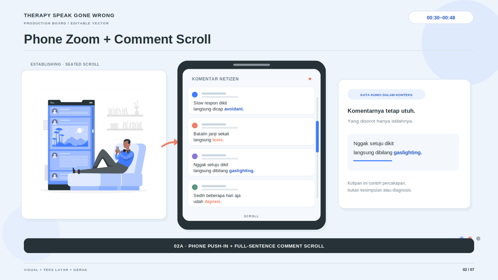
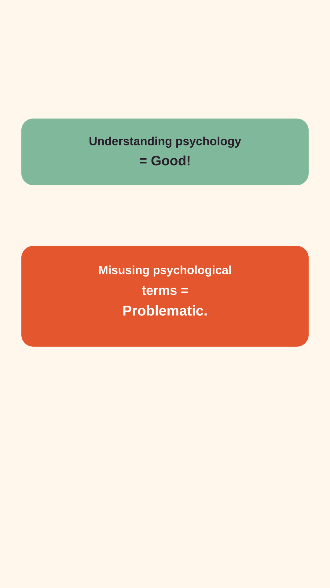

Scene 02 · 00:30—01:05 · 35 detik
Dari scroll ke label.
Ruang hidup terbentuk, komentar bergerak, istilah memenuhi layar, lalu dua pesan penutup muncul sesuai urutan naskah.

Motion belum bisa dimuat. Preview Scene 02A tetap tersedia; buka storyboard untuk frame lain.


